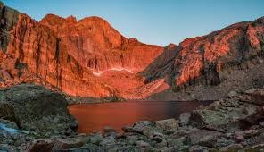

The Rocky Mountains, commonly known as the Rockies, are a major mountain range in western North America.
The Rocky Mountain Range actually represents a series of more than 100 separate mountain ranges, rather than one uninterrupted mountain chain.
The Rocky Mountains stretch some 4,800 kilometers (3,000 miles) from British Columbia and Alberta in Canada through Idaho, Montana, Wyoming, Colorado, and down to New Mexico in the U.S.
The Rockies vary in width from 110 to 480 kilometers (70 to 300 miles).
The Rockies are located between the Great Plains on the east (from which they rise abruptly for most of their length) and a series of broad basins and plateaus on the west.
The Rocky Mountains were initially formed from 80 million to 55 million years ago during the Laramide orogeny, in which a number of plates began to slide underneath the North American plate. Although some portions of the southern mountains date from uplifts during the Precambrian age (3,980 million to 600 million years ago).
Topographically, the Rockies are usually divided into five sections: the Southern Rockies, Middle Rockies, Northern Rockies (all in the United States), the Rocky Mountain system of Canada, and Brooks Range in Alaska.

The popular Pikes Peak, the second most visited peak in the world (behind Japan’s Mount Fuji), is only the 31st highest, rising 4,300 meters (14,110 feet) above sea level.
Like most mountain ranges, the Rocky Mountains have also been affected by severe erosion which has caused the development of deep river canyons as well as intermountain basins.